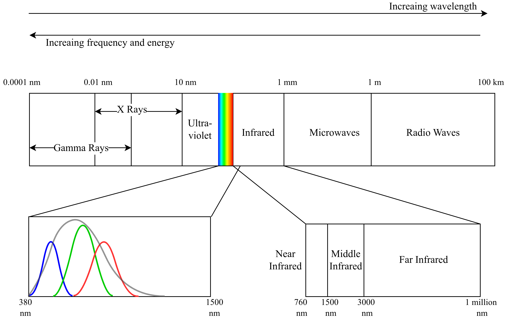
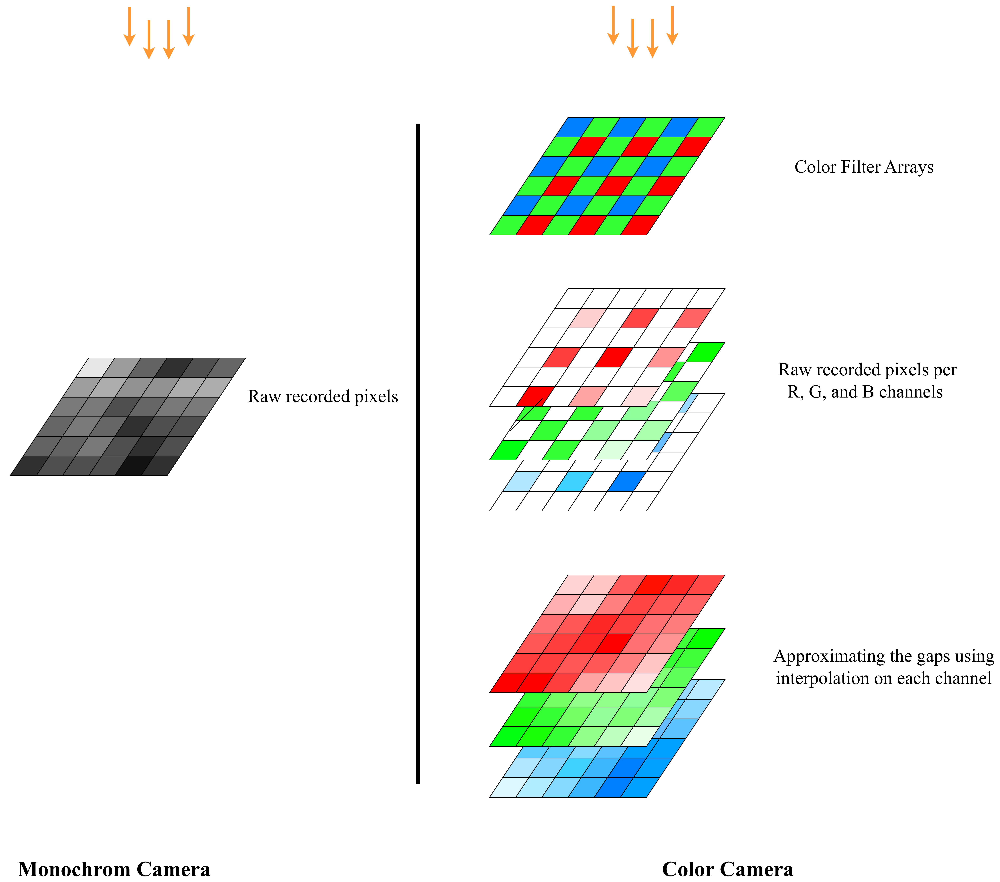

Chapter 2: Sensor Selection for SLAM
Objectives
The objective of this chapter is to get an introduction to different sensing modalities that are common in SLAM. Furthermore, we will discuss advantages and disadvantages of each sensing modality.
At the end of this chapter, it is expected that the reader will be able to: - Identify the suitable set of sensors for their application - They will be familiar with the common trade-offs regarding the SLAM sensors, including the trade-offs between accuracy, cost, computation, environment, and maturity of algorithms. - They will have an idea of which specifications to consider when choosing sensors for SLAM
Role of Sensors in SLAM Architecture
SLAM often has two separate internal components, namely the front-end and back-end.
Front-end: It is the module that turns raw sensor measurements of sensors into an intermediate representations that are more compact and informative about robot's or environment's state. For example, if a camera sensor is used for SLAM, it outputs images at a resolution of let's say 640x480. This means that we will have 307200 pixels each conveying some information about the environment. This is an enormous amount of information that is very difficult to comprehend and use. Hence, we need a set of processes to filter out this information and only extract a minimal set of relevant information that are insightful about robot's motion and states.
Back-end: It is the core algorithm, usually in the form of optimization or filtering, that takes the intermediate representations and outputs the robot's location and environment's map. The details of SLAM backend is not the focus of this course.
As evident from the above definitions, choice of sensor defines the SLAM front-end architecture.
2.1 Cameras for SLAM
2.1.1 Image
If you have previous experince with compputer vision or image processing, you can not find a more obvious information other than explaining what an image is! Otherwise, it is worth introducing you to the direct product of a camera. An image in computers is represented as a matrix of numbers. Each cell in the matrix is called a pixel, a discrete piece of infomation, determining how a tiny portion of the view looks like (Figure 1). As such, it must be intuitively easy to imagine that the higher the number of tiny pixels besides each other, the more clear picture of the view will be formed.
| Figure 1: Pixels, the building blocks of an image. |
2.1.2 Camera modalities
Cameras come at many different measurement modalities, such that the images they form will look different or measure different thing. The cameras that are usually common in robotic applications such as SLAM are mostly covering the visible light wavelengths. Figure 2, portrays the electromagnetic spectrum, and the whereabouts of the visible part of the spectrum (rainbow section) clearly indicates the target wavelengths that the cameras usually measure.
|  |
|---|
| Figure 2: What each sensing modality of cameras measures. |
Color cameras: These cameras are meant to capture a scene exactly in the most similar manner to the way we see the environment, by presenting the information in different shades of colors. In order to understand an important characteristics of the cameras that can be influential is robot perception and navigation, we must delve a bit deeper into how cameras work.
In the spectrum of the Figure 2, the wavelengths between 380-700 nm is covered by color cameras. However, the way that a color camera can capture the actual color is through a specific mechanism. In fact, a color camera is able to measure 3 values for each pixel, i) the intensity of the blue ii) green and iii) red colors. The sensitivity of the pixel to each of these colors, follows the distribution presented in Figure 2. For instance, a color corresponding to the frequency 400 nm, will mostly excite a blue color and less green and much less red.
However, the capturing of these 3 numbers at the same time follows an interesting engineering trick in the design of color sensors. As depicted in Figure 3, color cameras don’t record three color numbers per pixel directly. Instead, a color filter array (CFA), most commonly the Bayer pattern, places red, green, or blue filters over individual sensor pixels in an alternating mosaic (Figure 3). Each pixel measures only one color component, and the camera later uses demosaicing (e.g., nearest-neighbor, bilinear, bicubic, or more advanced methods) to reconstruct full RGB values for every image pixel. The Bayer pattern includes twice as many green filters as red or blue because luminance (perceived detail) is largely carried by the green channel, so oversampling green improves sharpness and noise performance (the choice also aligns with human visual sensitivity). The filters themselves pass only the corresponding wavelength ranges for R, G, and B (see Figure 2). Please refer to this reference for more details.
|  |
|---|
| Figure 3: Comparison of monochrom and color camera mechanisms for capturing the image. |
Monochrom: Unlike color cameras, there is no filter arrays needed for different pixels. In monochrom cameras, all the pixels are used for capturing some portions of the scene, thus the full potential of the physical pixels of the camera is used to capture the scene details, and no approximation through interpolation is usually needed. This is further depicted in Figure 3 by comparing these two sensing modalities.
Another consequence of the color filters is that, they narrow down spectrum of the incoming rays of light, only passing a rather narrow band (related to the R, G, or B color). In Figure2, we have tried to show the range of wavelengths that are covered by R filter, G filter, B filter, and finally no filter (monochrome). These are approximation curves and they slightly differ for each real sensor. These curves are usually provided by the manufacturer. As is evident, a monochrome sensor (gray curve), covers a wider range of spectrums compared to the combination of R,G,B filters together. Specefically, it covers more on a portion of the infra-red band, also known as near-infrared. As a result, each pixel will receive less share of light rays (photons so to say); however, a monochrom camera due to lack of the filters can receive more light rays and is more illuminated compared to RGB cameras, improving performance at the darkness.
 |
|---|
| Figure 4: Comparison between images taken from different ranges of electromagnetic spectrum. Image taken from https://doi.org/10.48550/arXiv.2108.11767 |
To make the discussion more sensible, Figure 4, brings a comparison between images taken from different electromagnetic bands. For instance, the RGB camera captures nice representation of the lit parts of the scene, also providing more semantics through the color information. However, the same scene captured using a monochrom camera that also captures some light in near-infrared (NIR) band can show more of the shadowed section of the scene, while providing a good geometrical understanding of the lit portion, yet missing the color details. The more the camera moves towards higher wavelengths (more towards middle-infrared and far-infrared) the more it turns into a thermal camera, seeing better at darkness and sensing the heat, yet the more specialized the sensors become that comes at a higher cost.
2.1.3 Camera configurations
Monocular camera: It captures image data through a single lens. The benefit is that it is the most compact and efficient sensor setup in robotics, and SLAM systems. The drawback is that, this makes it more complicated to understand the geometry of the scene.
Intuitively, it is not possible to understand the other dimensions of the real-world objects (also known as depth estimation), unless you observe them from at least two different points of view. This 3D understanding about the surrounding objects is central to the SLAM methodologies. Using only a single camera seems to prevent us from understanding the distances of the scene components from us; however, there are a few tricks that will enable depth estimation even using monocular cameras.
The traditional approach is to move the camera around and use the observation of the same object in multiple frames at different times. Although the depth estimation will not be at hand at every frame, but after some time, assuming sufficient spatial translations, we should be to look at the same targets from different angles. This allows us to do simple geometrical analysis also known as Triangulation to measure objects' distances from the camera.
There is a more recent approach to solve the monocular depth estimation problem, which is taking advantage of deep neural networks. These networks are trained using massive datasets, learning how to estimate the relative distances of object from camera only using a single image. This depth estimation based on experience is kind of similar to the way a human can infer depth if he covers one of his eyes, such that he still can understand distances but mostly because of experience.
Stereo camera: If two monocular cameras are attached together, such that they share most of their view, it is a stereo camera setup. This is very similar to human way of observing the environment. In this setup, at every timestamp, the calculation of the scene depth is possible, since we already have two different views of the object. Simlar triangulation techniques, or more complicated methods are possible to be used here. The accuracy of the output depth estimation relies on many factors such as the algorithm. The maximum range of depth estimation depend on how separated the two cameras are from each other (also called the stereo baseline).
 |
|---|
| Figure 5: The comparison between monocular and stereo cameras in terms of 3D scene understanding. |
In the Figure 5, examples of monocular and stereo cameras are highlighted. As evident, for a monocular camera, only by having dicplacements with respect to an object in the scene (the star shape represents an object), it is possible to create a virtual stereo camera by putting together the pairs of images from different times (given that they are far apart sufficiently). Then, a triangle can be assumed, however, all three side of the triangle are unknown, yet using two consecutive computer vision methods, namely the Five Points method, then Perspective n Points, a value for these sides will be at hand which is proportionally correct, however, does not have the right metric scale. The details for these algorithms is for interested readers. At the end, it should be emphasized that the monocular camera can not yield the right metric values for the depth of the features and only can deliver values for distances of objects that are correct relative to each other (correct proportions). If we want to convert them to correct metric values, another hint (another sensor such as IMU) should be incorporated.
By comparison, the stereo camera in Figure 5, forms a similar triangle, however in one time instance and not across two different time instances. Moreover, the triangle that is formed for on object in the scene, has one known side (which is the baseline since we know how much apart are the two cameras from each other). As such, an easier triangulation with correct metric scale is possible without the need for additional hints.
2.1.2 Camera-based SLAM Front-end
Cameras provide the richest set of information among the available solutions for SLAM. The real challenge of using and dealing with camera is how to extract the necessary information out of them.
When you choose cameras for your SLAM problem, you will often end up with a general architecture. We depict this general architecture in Figure 6. It does not mean that all SLAM algorithms are exactly following this architecture, but gives a general ideea of what happens in the camera-based SLAM.
 |
|---|
Figure 6: Camera-based SLAM architecture. Taken from the robor_test_3 sequence in SMARTNav dataset. |
As emphasized previously, cameras spit out a lot of pixeled data. The first step is to Extract Features, ie. only keep the information that are necessary and useful. In Figure 6, you can see that some common ways of extracting features are depicted. For instance, extracting the edges in the picture, or extracting feature points (mostly the corner or sharp points in the environment that are easily detectable), or even lines are detected and extracted from image. These are popular feature extraction techniques because of two main reasons. I) It is relatively easy and quick to identify these features using classical computer vision II) It is possible to track these features accross different consecutive image frames. Among these intermediate representations, feature points are the most comonly used method.
After feature extraction, it is important to maintain a unique identity for the features across different frames. As an example, if you see the corners of the ceiling of the house, in Figure 6, as a unique feature in the environment, you should be able to detect the same spot at a few moments later and you should be able to understand that this corner is the same that you saw before. If you successfully do this, you have performed a correct Feature Tracking. Figure 6, also shows an example depiction of feature tracking, where the features are tracked across two consecutive image frames. The location of these features in the first and second frame is drawn by the red dots and the green lines have established a connection between the latest and former location of the features.
Although, the tracking of the features of environment is essential to the SLAM, providing a sense of relative motion with respect to the environment, it is not enough to realize a 3D measuremt of motion. The feature points should not be only tracked in the 2 dimensional space of the image, but also their 3D location in the space must be determined. So for each feature point, we can estimate a 3D location from the images, that is not trivial, but achievable through either monocular or stere-based camera configurations. In Figure 2, the uplifting of 2 dimensional features from image space into the 3D space is visualized such that a metric distance between the camera and the spatial position of that feature is at hand.
2.1.4 Sensor requirements (what to buy & why)
The camera to be used in SLAM should have specific characteristics, some of which are listed in the table below. Note that some of more detailed specs are useful when a custom camera sensor and lens is being selected, while many cameras used in robotics, have a good trade-off between these specs.
| Spec. | Desirable | Remarks |
|---|---|---|
| FOV | high | To see a higher number of features at the same time in the environment. To be able to pick best features. To avoid being blinded or obstructed. |
| Shutter | global | |
| To minimize motion blur. To eliminate rolling shutter effect, that skews moving objects in the image and give unrealistic depiction of scenes in case of motion. | ||
| Resolution | medium | Very low resolution can prevent VIO from proper tracking of features. High resolution will introduce unnecessary processing loads to the system, specially keeping the buses (USB for instance) busy, difficult to record the data, and more delay in VIO when tracking features between frames. Moreover, high reolution global shutter sensors will add to the costs of the system. |
| FPS | high | It can help in fast motion so that the feature tracks dont get lost. |
| Attachment | Rigid | |
| The camera should not be gimballed or should not have a loose connection to the body. It should represent the robot’s body position and orientation. | ||
| Dynamic Range | high | Dynamic range indicated the ability of the camera to capture details in dark or bright areas of an image. |
| Lens | adjustable | The lens of the camera should be changeable. The cameras with and m-12 lens mount are ideal. It should not have a stock lens which is not changeable. |
| Connection | MIPI | |
| Flat cable connection to the onboard computer (Jetson) help with faster data transfer and undesirable delays and bandwidth limitations of the USB. | ||
| Pixel size | high | |
| The higher the pixel size, the better low light performance. | ||
| Optical size/format | compatible with lens | This size determines the effective area of sensor that captures the scene. If it is smaller than that of the lens, a big part of the scene taken by lens will go out of image boundaries. If it is larger than that of lens, a big dark area will appear around the captures scene in the final image. |
2.1.6 Available solutions (examples)
2.1.8 Advantages and disadvantages of visual SLAM
There are many advantages to the cameras, that make them a suitable choice for SLAM in robotics. - They are rich. They see almost everything that a human doest. - They are usually lightweight, that makes them perfect for robots which weight is a determinig factor. - They are also energy efficient. - Inclusion of the cammera has the minimum design burden compared to LiDAR, RADAR, Compass, GNSS, and even the IMU. Meaning that they can be put flexibly on any part of the robot without much constraint on your design. - They can be used for other purposes. For instance you can put a camera for running your SLAM but also you can use the stream of image to perform another vision task, such as identifying a subject.
The cameras also come with some disadvantages: - They are not able to directly understand the geometry of the scene. Understanding the geometry of the scene (how far things are from the camera) is necessary in SLAM and there are techniques to understand the distances but these techniques are not 100% reliable and have many limitations such as range and the textures in the environment. - The volume of data that is to be handled by camera is relatively high. - Due to the handling of the camera data, they often introduce delay to system, happening at the data transfer from sensor to the computer and copy pastings at Operating System (OS) level. - The SLAM algorithms that use camera are usually heavier than the ones using other modalities. This further processing often happens during feature extraction and 3D understanding of the environment - Normal RGB cameras dont see at darkness.